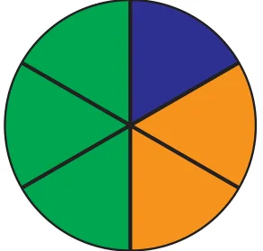

<!DOCTYPE html>
<html lang="en">
<head>
<meta charset="UTF-8">
<meta name="viewport" content="width=device-width,initial-scale=1">
<title>7.9 A Pinch of History — Fractions</title>
<meta name="description" content="Class 6 Mathematics · Fractions · 7.9 A Pinch of History">
<link rel="icon" href="data:image/svg+xml,<svg xmlns='http://www.w3.org/2000/svg' viewBox='0 0 100 100'><text y='.9em' font-size='90'>📘</text></svg>">
<link rel="stylesheet" href="../../../assets/book.css">
<link rel="stylesheet" href="https://cdn.jsdelivr.net/npm/katex@0.16.11/dist/katex.min.css" crossorigin="anonymous">
</head>
<body>
<header class="topbar">
<div class="topbar-in">
  <div class="crumb">
    <span class="c1"><a href="../../../index.html">Library</a> · <a href="../../index.html">Class 6 Mathematics</a></span>
    <span class="c2">Fractions · 7.9 A Pinch of History</span>
  </div>
  <a class="tb-btn" data-nav="prev" href="../../07-fractions/23-figure-it-out/index.html" title="Figure it Out">←</a>
  <details class="drawer"><summary class="tb-btn" title="Sections in this chapter">☰</summary>
<div class="drawer-panel"><div class="dh">Fractions</div><a href="../01-chapter-opener/index.html">Chapter opener</a><a href="../02-fractional-units-and-equal-shares-7.1/index.html">7.1 Fractional Units and Equal Shares</a><a href="../03-figure-it-out/index.html">Figure it Out</a><a href="../04-fractional-units-as-parts-of-a-whole-7.2/index.html">7.2 Fractional Units as Parts of a Whole</a><a href="../05-figure-it-out/index.html">Figure it Out</a><a href="../06-measuring-using-fractional-units-7.3/index.html">7.3 Measuring Using Fractional Units</a><a href="../07-figure-it-out/index.html">Figure it Out</a><a href="../08-marking-fraction-lengths-on-the-number-line-7.4/index.html">7.4 Marking Fraction Lengths on the Number Line</a><a href="../09-figure-it-out/index.html">Figure it Out</a><a href="../10-mixed-fractions-7.5/index.html">7.5 Mixed Fractions</a><a href="../11-figure-it-out/index.html">Figure it Out</a><a href="../12-figure-it-out/index.html">Figure it Out</a><a href="../13-figure-it-out/index.html">Figure it Out; 7.6 Equivalent Fractions</a><a href="../14-figure-it-out/index.html">Figure it Out</a><a href="../15-figure-it-out/index.html">Figure it Out</a><a href="../16-figure-it-out/index.html">Figure it Out</a><a href="../17-figure-it-out/index.html">Figure it Out</a><a href="../18-figure-it-out/index.html">Figure it Out; 7.7 Comparing Fractions</a><a href="../19-figure-it-out/index.html">Figure it Out</a><a href="../20-addition-and-subtraction-of-fractions-7.8/index.html">7.8 Addition and Subtraction of Fractions</a><a href="../21-figure-it-out/index.html">Figure it Out</a><a href="../22-figure-it-out/index.html">Figure it Out</a><a href="../23-figure-it-out/index.html">Figure it Out</a><a href="../24-a-pinch-of-history-7.9/index.html" aria-current="page">7.9 A Pinch of History</a><a href="../25-solutions/index.html">CHAPTER 7 — SOLUTIONS</a></div></details>
  <a class="tb-btn" data-nav="next" href="../../07-fractions/25-solutions/index.html" title="CHAPTER 7 — SOLUTIONS">→</a>
  <button class="tb-btn" data-theme-toggle title="Toggle light / dark" aria-label="Toggle light or dark theme">◐</button>
</div>
<div class="progress"><span style="width:67.0%"></span></div>
</header>
<main class="wrap">
<div class="sec-head">
  <p class="eyebrow"><a href="../index.html">Chapter 7 · Fractions</a></p>
  <h1>7.9 A Pinch of History</h1>
  <p class="sec-meta">Textbook pages 32–36 · 4 figures</p>
</div>
<article class="prose">
<p>Do you know what a fraction was called in ancient India? It was called bhinna in Sanskrit, which means ‘broken’. It was also called bhaga or ansha meaning ‘part’ or ‘piece’. The way we write fractions today, globally, originated in India. In ancient Indian mathematical texts, such as the Bakshali manuscript (from around the year 300 CE), when they wanted to write wrote it as \(^{1}\) which is indeed very similar to the way we write it \(\frac{1}{2}\) , they</p>
<p>today! This method of writing and working with fractions continued to be used in India for the next several centuries, including by Aryabhata (499 CE), Brahmagupta (628 CE), Sridharacharya (c. 750 CE), and Mahaviracharya (c. 850 CE), among others. The line segment between the numerator and denominator in ‘ \(\frac{1}{2}\) ’ and in other</p>
<p>fractions was later introduced by the Moroccan mathematician Al-Hassar (in the 12th century). Over the next few centuries the notation then spread to Europe and around the world. Fractions had also been used in other cultures such as the ancient Egyptian and Babylonian civilisations, but they primarily used only fractional units, that is, fractions with a 1 in the numerator. More general fractions were expressed as sums of fractional units, now called ‘Egyptian fractions’. Writing numbers as the sum of fractional units, e.g., \(\frac{19}{24} = \frac{1}{2} + \frac{1}{6} + \frac{1}{8}\) , can be quite an art and leads to beautiful puzzles. We will consider one such puzzle below. General fractions (where the numerator is not necessarily 1) were first introduced in India, along with their rules of arithmetic operations like addition, subtraction, multiplication, and even division of fractions. The ancient Indian treatises called the ‘Sulba- sutras’ shows that even during Vedic times, Indians had discovered the rules for operations with fractions. General rules and procedures for working with and computing with fractions were first codified formally and in a modern form by Brahmagupta. Brahmagupta’s methods for working with and computing with fractions are still what we use today. For example, Brahmagupta described how to add and subtract fractions as follows: “By the multiplication of the numerator and the denominator of each of the fractions by the other denominators, the fractions are reduced to a common denominator. Then, in case of addition, the numerators (obtained after the above reduction) are added. In case of subtraction, their difference is taken.’’ (Brahmagupta, Brahmasphuṭasiddhānta, Verse 12.2, 628 CE) The Indian concepts and methods involving fractions were transmitted to Europe via the Arabs over the next few centuries and they came into general use in Europe in around the 17th century and then spread worldwide.</p>
<h3 id="s-puzzle">Puzzle!</h3>
<p>It is easy to add up fractional units to obtain the sum 1, if one uses the same fractional unit, for example,</p>
<p>\(\frac{1}{2} + \frac{1}{2} = 1\), \(\frac{1}{3} + \frac{1}{3} + \frac{1}{3} = 1\), \(\frac{1}{4} + \frac{1}{4} + \frac{1}{4} + \frac{1}{4} = 1\), etc.</p>
<p> However, can you think of a way to add fractional units that are all different to get 1?  It is not possible to add two different fractional units to get 1. The reason is that \(\frac{1}{2}\) is the largest fractional unit, and \(\frac{1}{2} + \frac{1}{2} = 1\).  To get different fractional units, we would have to replace at least one of the \(\frac{1}{2}\) ’s with some smaller fractional unit - but then the sum would be less than 1! Therefore, it is not possible for two different fractional units to add up to 1.  We can try to look instead for a way to write 1 as the sum of three different fractional units.</p>
<figure class="fig side-fig"></figure>
<ul class="qlist">
<li><span class="mk">1.</span><span class="lt">Can you find three different fractional units that add</span></li>
</ul>
<p>up to 1?</p>
<p>It turns out there is only one solution to this problem (up to changing the order of the 3 fractions)! Can you find it? Try to find it before reading further. Here is a systematic way to find the solution. We know that \(\frac{1}{3} + \frac{1}{3} + \frac{1}{3} = 1\). To get the fractional units to be different, we will have to increase at least one of the \(\frac{1}{3}\) ’s, and decrease at least one of the other \(\frac{1}{3}\) ’s to compensate for that increase. The only way to increase \(\frac{1}{3}\) to another fractional unit is to replace it by \(\frac{1}{2}\) . So \(\frac{1}{2}\) must be one of the fractional units. Now \(\frac{1}{2} + \frac{1}{4} + \frac{1}{4} = 1\). To get the fractional units to be different, we will have to increase one of the \(\frac{1}{4}\) ’s and decrease the other \(\frac{1}{4}\) to compensate for that increase. Now the only way to increase \(\frac{1}{4}\) to</p>
<p>another fractional unit, that is different from \(\frac{1}{2}\) , is to replace it by \(\frac{1}{3}\) . So two of the fractions must be \(\frac{1}{2}\) and \(\frac{1}{3}\) ! What must be third fraction then, so that the three fractions add up to 1? This explains why there is only one solution to the above problem.</p>
<figure class="fig"></figure>
<p>\(\frac{1}{2} + \frac{1}{3} + \frac{1}{6} = 1\)</p>
<p>What if we look for four different fractional units that add up to 1?</p>
<ul class="qlist">
<li><span class="mk">2.</span><span class="lt">Can you find four different fractional units that add</span></li>
</ul>
<figure class="fig side-fig"></figure>
<p>up to 1?</p>
<p>It turns out that this problem has six solutions! Can you find at least one of them? Can you find them all? You can try using similar reasoning as in the cases of two and three fractional units - or find your own method! Once you find one solution, try to divide a circle into parts like in the figure above to visualise it!</p>
<figure class="fig"></figure>
<p>Fraction as equal share: When a whole number of units is divided into equal parts and shared equally, a fraction results. Fractional Units: When one whole basic unit is divided into equal parts, then each part is called a fractional unit. Reading Fractions: In a fraction such as \(\frac{5}{6}\) , 5 is called the numerator and 6 is called the denominator. Mixed fractions contain a whole number part and a fractional part. Number line: Fractions can be shown on a number line. Every fraction has a point associated with it on the number line. Equivalent Fractions: When two or more fractions represent the same share or number, they are called equivalent fractions. Lowest terms: A fraction whose numerator and denominator have no common factor other than 1 is said to be in lowest terms or in its</p>
<p>simplest form.</p>
<p>Brahmagupta’s method for adding fractions: When adding fractions, convert them into equivalent fractions with the same fractional unit (i.e., the same denominator), and then add the number of fractional units in each fraction to obtain the sum. This is accomplished by adding the numerators while keeping the same denominator. Brahmagupta’s method for subtracting fractions: When subtracting fractions, convert them into equivalent fractions with the same fractional unit (i.e., the same denominator), and then subtract the number of fractional units. This is accomplished by subtracting the numerators while keeping the same denominator.</p>
</article>
<nav class="pager"><a class="" data-nav="prev" href="../../07-fractions/23-figure-it-out/index.html"><span class="dir">← Previous</span><span class="t">Figure it Out</span><span class="ch">Fractions</span></a><a class="nx" data-nav="next" href="../../07-fractions/25-solutions/index.html"><span class="dir">Next →</span><span class="t">CHAPTER 7 — SOLUTIONS</span><span class="ch">Fractions</span></a></nav>
</main><footer class="site">Generated from the source textbook PDFs · text, figures and exercises belong to their respective publishers.</footer><script defer src="https://cdn.jsdelivr.net/npm/katex@0.16.11/dist/katex.min.js" crossorigin="anonymous"></script>
<script defer src="https://cdn.jsdelivr.net/npm/katex@0.16.11/dist/contrib/auto-render.min.js" crossorigin="anonymous"
  onload="renderMathInElement(document.body,{delimiters:[
    {left:'\\(',right:'\\)',display:false},
    {left:'$$',right:'$$',display:true},
    {left:'\\[',right:'\\]',display:true}],throwOnError:false,ignoredTags:['script','noscript','style','textarea','pre','code']})"></script>
<script src="../../../assets/book.js"></script>
<script defer src="../../../../assets/search.js"></script>
<script defer src="../../../../assets/screenshot.js"></script>
</body>
</html>
